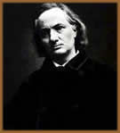
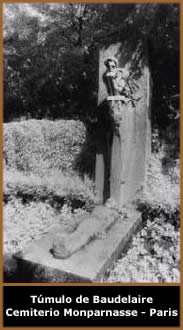

Charles-Pierre
Baudelaire nasceu em Paris, no dia 9 de Abril de 1821. Numa infância
e adolescência atormentada, viu-se órfão do
pai aos seis anos, e passou a odiar o segundo marido de sua mãe,
o general Aupick. Após anos de desavenças com o
padrasto, Baudelaire interrompeu seus estudos em Lyon para iniciar
uma viagem à Índia. Ao regressar, participou da
revolução de 1848 e logo após dissipou seus
bens em meio a boemia e a jogatina parisiense. Lá conheceu
personalidades como Mme. Sabatier, Marie Daubrun, e uma de suas
musas, a atriz Jeanne Duval. Submerso em dívidas, Baudelaire
foi submetido a um conselho judiciário iniciado por seus
familiares. Assim, o tutor Ancelle foi nomeado para controlar
os gastos do escritor.
Um fato marcante na vida de Baudelaire, deu-se
em 1857 com a publicação de As Flores do Mal
(Les Fleurs du Mal). Este, que é o maior título
de sua carreira, contém poesias que datam de 1841. Esta
obra rendeu-lhe um processo pelo tribunal correcional do Sena;
uma multa por atentar à moral e aos bons costumes, além
de ser obrigado a retirar seis poemas (poesies damnées)
do volume original, sendo publicado na íntegra apenas nas
edições póstumas, em 1911. Baudelaire também
foi alvo da hostilidade da imprensa, que o julgava um subproduto
degenerado do romantismo. Porém, sua carreira foi admirada
e elogiada por Vitor Hugo e Gustave Flaubert, entre outros.
Tanto As Flores do Mal como Pequenos
Poemas em Prosa (Petits Poèmes en Prose,
que depois seria intitulado Lê Spleen de Paris)
foram publicados em revistas desde 1861, e introduziram novos
elementos na linguagem poética, fundindo os opostos existenciais
como o sublime e o grotesco, e explorando as analogias ocultas
do universo.
Baudelaire foi o escritor que avançou as
fronteiras dos costumes em sua época, lançando-se
também como crítico de arte no Salon de 1845. Nesse
momento, o poeta tornava-se um crítico que buscava um princípio
inspirador e coerente nas obras de arte. Os escritos que o revelam
nesse segmento A arte Romântica e Curiosidades
Estéticas só foram publicadas em 1868. Baudelaire
atuou também como tradutor de Allan
Poe a partir de 1848. Entre seus ensaios, destaca-se O
Princípio Poético (1876), onde as bases de
sua poética foram fixadas.
Um
outro Charles-Pierre Baudelaire é revelado em Os Paraísos
Artificiais, ópio e haxixe (1860), uma especulação
sobre plantas alucinógenas, parcialmente inspirada na obra
de Thomas De Quincey, Confissões de um Comedor de Ópio.
Encontra-se também obras de cunho intimista e confessional,
como Meu Coração Desnudo e Diários
Íntimos.
Baudelaire é tido como um dos maiores da
França de todos os tempos. Alguns o consideram um ensaísta
do parnasianismo, ou um romântico exacerbado. De atuação
ousada, tornou-se um ícone no século XX influenciando
a poesia mundial de tendências simbolistas, inclusive no
Brasil com Teófilo Dias. De sua obra, derivam Rimbaud,
Verlaine e Mallarmé. Baudelaire foi precursor de uma linguagem
moderna no romantismo, concedendo a realidade uma submissão
lírica. Assim, sua poesia é marcada pela contradição;
de um lado via-se um herdeiro do romantismo obscuro de Allan Poe
e Gerard de Neval, e de outro, o poeta que se opôs ao sentimentalismo
redundante do romantismo francês.
Seus últimos anos foram
obscurecidos por doenças de origem nervosa. Após
uma vida repleta de atribulações, Baudelaire morreu
em Paris, no dia 31 de Agosto de 1867 nos braços de sua
mãe, acometido pela paralisia geral.
Seu talento, capacidade intelectual
e percepção romântica, só foram totalmente
apreciadas após sua morte. Tanto um Baudelaire, em sua
face crítica e ácida, como o poeta confessional
e expontâneo; mas, principalmente, como a totalidade de
sua obra e o devido reconhecimento que lhe é atribuído.
Por Spectrum
Obras
Disponíveis:
Poemas